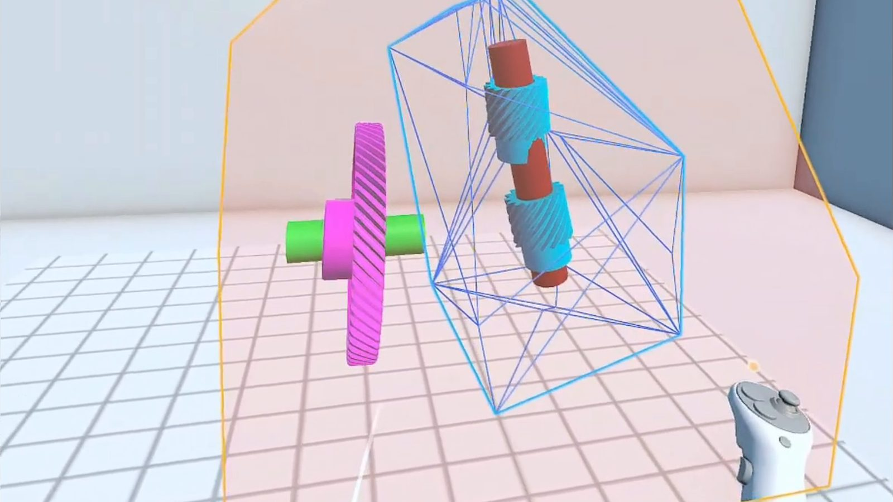
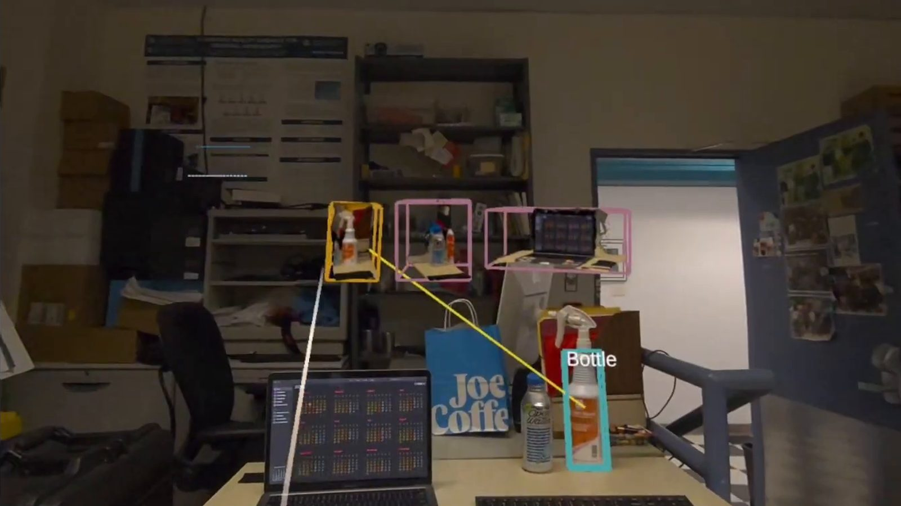
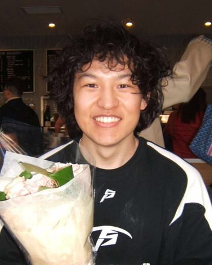

Research
Telling a robot what to build, not how
Many assembly tasks only need parts placed relative to each other, not at fixed spots in the room. I design XR interfaces that let a person specify just those constraints and leave the rest to a robot, starting from relative 6DoF pose specification for task guidance [5]. Delegate the Details pairs such an interface with a robot planner and was tested in a 20-participant study and offline evaluation with a simulated UR5 robot [9]; a bimanual technique lets an operator nest constraint groups into assembly hierarchies for teleoperation [6].

Bringing physical objects into the headset
With a Meta Quest 3, our pipeline uses feed-forward 3D Gaussian splatting to digitize a real object in two to four seconds, with no per-scene training. The result is a proxy that can be grabbed, inspected, and used to select the physical object it came from [7]. An earlier study found that proxies kept in the scene after use were more efficient than temporary ones for hard reselection, and participants preferred them [4].

Toolkits for building XR systems
XR applications wire many scene objects together with intricate logic, which makes them hard to build and debug. Our XR GUI for the MercuryMessaging toolkit lets developers view and edit the messages and relationships between scene entities from inside the headset [2].

Software
MercuryMessaging is a network routing and event-handling library for Unity. I released version 2.0, which adds networking APIs and speeds up VR app and user study development up to two-fold.
I made a Linux/GCC port of Meta’s CLOD-3DGS, a continuous level-of-detail renderer for 3D Gaussian splatting from Eurographics 2025.
Publications
- 2026
- 2025
- 2024
- 2023
Preprints
- 2026
Under review
- TeleSplat: Real-Time 3DGS Memory for Immersive XR Teleoperation. IEEE ICRA 2027.
- First-author paper under review at ACM CHI 2027 (double-blind); decision expected December 2026.
- First-author paper under review at IEEE VR 2027 (double-blind); decision expected November 2026.
News
- Co-authored Augmenting Human Performance with an XR Agent, to appear at ACM UIST 2026 in Detroit, MI.
- Presented Delegate the Details at IEEE ISMAR 2026 in Bari, Italy.
- Started a research internship on the Human-Robot Interaction team at Toyota Research Institute in Cambridge, MA.
- Co-authored SwEYEpinch and Beyond, on XR text entry, published at ACM CHI 2026 in Barcelona, Spain.
- Fast Digitization in XR received the Best Research Demo Award (Honorable Mention) at IEEE VR 2026 in Daegu, South Korea.
Earlier news (9)
- Presented a research demo on Gaussian-splatted proxies and a poster on bimanual teleoperation at IEEE VR 2026 in Daegu, South Korea.
- Presented Virtual Reality Task Guidance at IEEE ISMAR 2025 in Daejeon, South Korea.
- Received the Columbia–Dream Sports AI Grant.
- Started as head TA for COMS 6173: VR and AR Seminar.
- Presented Permanent Proxies for Bimanual Selection and Manipulation in VR at IEEE VR 2025 in Saint-Malo, France.
- Received the EGSC Professional Development Scholarship.
- Presented two demos at IEEE ISMAR 2024 in Bellevue, WA: an XR GUI for visualizing ECS messages and VHard, for rehearsing climbing moves.
- Started as head TA for COMS 4172: 3D User Interfaces and Augmented Reality.
- Started my PhD in Computer Science at Columbia University, advised by Steven Feiner in the CGUI Lab.
Awards
- Best Research Demo Award (Honorable Mention), IEEE VR 2026
- Columbia–Dream Sports AI Grant
- EGSC Professional Development Scholarship
- Greenwoods Fellowship
- Grand Prize, AGU Michael H. Freilich Student Visualization Competition
Talks
- Paper talk, IEEE ISMAR 2026, Bari, Italy: Delegate the Details
- Research demo and poster, IEEE VR 2026, Daegu, South Korea: Fast Digitization in XR and Bimanual XR Specification
- Presentation, IEEE ISMAR 2025, Daejeon, South Korea: Virtual Reality Task Guidance
- Poster, IEEE VR 2025, Saint-Malo, France: Permanent Proxies
- Demos, IEEE ISMAR 2024, Bellevue, WA: An XR GUI for Visualizing Messages in ECS Architectures and VHard
Teaching & service
- Fall 2025Head TA, COMS 6173: VR and AR Seminar
- Spring 2024Head TA, COMS 4172: 3D User Interfaces and Augmented Reality
- 2021TA, COMS 4771: Machine Learning, Summer and Fall
- ReviewingACM CHI (2024, 2025, 2027), ACM VRST (2024), IEEE ISMAR (2024)
Miscellany
When not working on research, I like to ski, climb, and play volleyball. I also enjoy fantasy, sci-fi, and literary fiction. Some of my favorites are Piranesi (Susanna Clarke), The Last Samurai (Helen DeWitt), and The Mountain in the Sea (Ray Nayler).
About

Ben Yang is a PhD candidate in Computer Science at Columbia University, where he works with Steven Feiner in the Computer Graphics and User Interfaces Lab and is part of Columbia HCI. His research is on XR interfaces for robot teleoperation and human-robot collaboration, and on 3D Gaussian splatting for bringing physical objects into XR. In 2026 he was a research intern on the Human-Robot Interaction team at Toyota Research Institute. He received an M.S. in Computer Science from Columbia University in 2022, working with Junfeng Yang, and a B.S. in Computer Science, Mathematics, and Cognitive Science from Rutgers University in 2020.